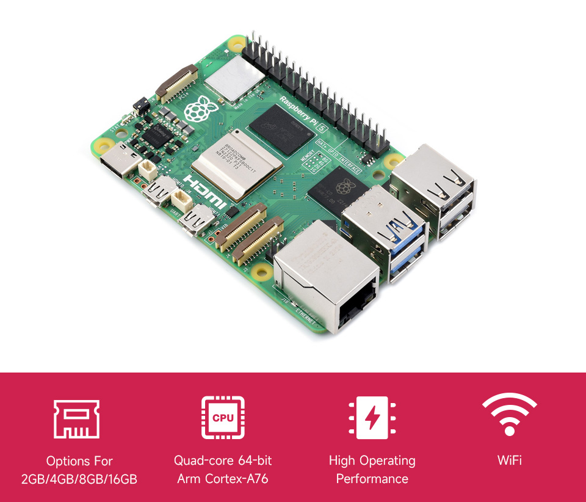
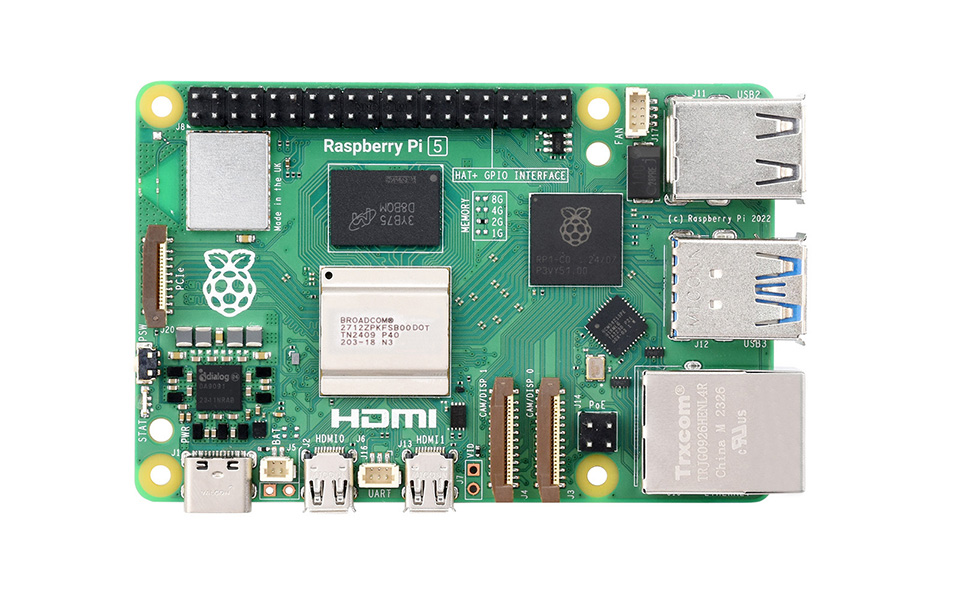
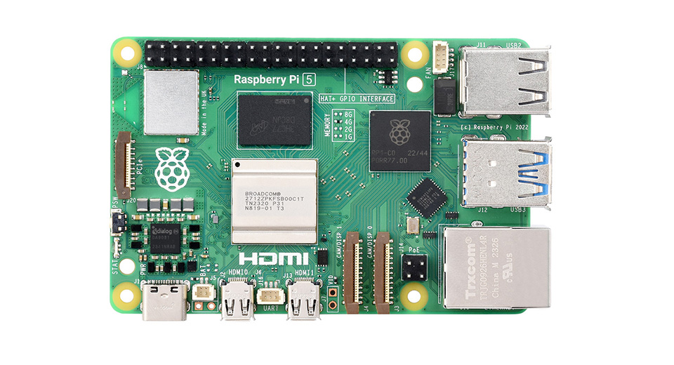
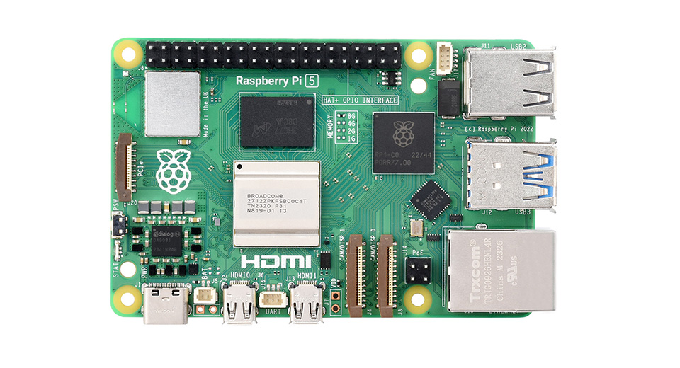
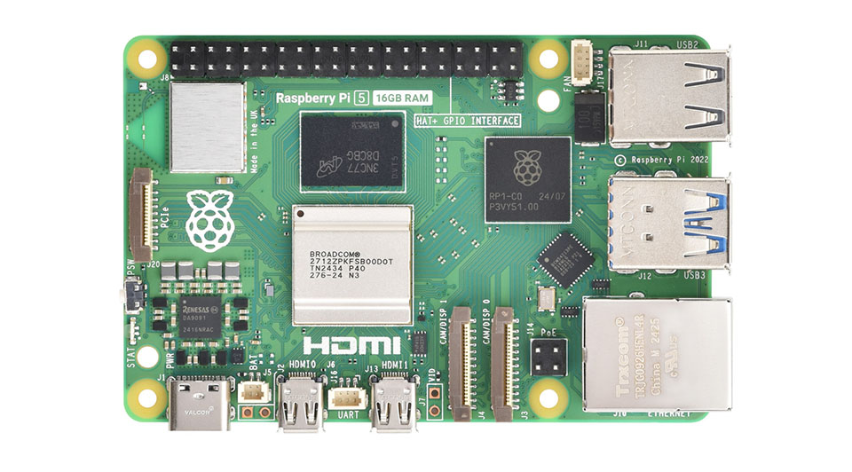

The latest generation of Raspberry Pi: the everything computer
Built Using RP1 I/O Controller Designed By Raspberry Pi
Raspberry Pi 5 is the latest generation flagship product in the Raspberry Pi series, following the success of the Raspberry Pi 4. It provides a 2-3x increase in CPU performance over the previous generation. Onboard dual CSI/DSI ports and USB connectors which are provided by the Raspberry Pi RP1 I/O controller. And this is the first Raspberry Pi computer using silicon built in-house at Raspberry Pi.
Key features include:
- 2.4GHz quad-core 64-bit Arm Cortex-A76 CPU, 512KB per-core L2 caches and a 2MB shared L3 cache
- VideoCore VII GPU @800MHz, supporting OpenGL ES 3.1, Vulkan 1.2
- Dual 4Kp60 HDMI® display output
- 4Kp60 HEVC decoder
- LPDDR4X-4267 SDRAM (options for 2GB/4GB/8GB/16GB)
- 2.4GHz/5GHz dual-band 802.11ac Wi-Fi®
- Bluetooth 5.0 / Bluetooth Low Energy (BLE)
- TF card slot, with support for high-speed SDR104 mode
- 2 × USB 3.0 ports, supporting simultaneous 5Gbps operation
- Gigabit Ethernet, with PoE+ support (requires separate PoE+ HAT)
- 2 × 4-lane MIPI DSI/CSI port
- PCIe 2.0 x1 interface for fast peripherals (requires separate M.2 HAT or other adapter)
- 5V/5A DC power via USB-C, with Power Delivery support
- Raspberry Pi standard 40-pin header
- Real-time clock (RTC), powered from external battery (not included)
- Onboard power button for power on/off without disconnecting power adapter
| Module | Raspberry Pi 4B | Raspberry Pi 5 |
|---|---|---|
| CPU | Broadcom BCM2711, quad-core Cortex-A72 (ARM v8) 64-bit SoC, 1.8GHz frequency | Broadcom BCM2712, quad-core Cortex-A76 (ARM v8) 64-bit SoC, 2.4GHz frequency |
| RAM | Options for 2GB/4GB/8GB | Options for 2GB/4GB/8GB/16GB |
| Interfaces | 2.4GHz and 5.0GHz 802.11a dual-band WiFi | 2.4GHz and 5.0GHz 802.11a dual-band WiFi |
| Bluetooth 5.0, BLE | Bluetooth 5.0, BLE | |
| Gigabit Ethernet | Gigabit Ethernet | |
| N/A | 1 × PCle 2.0 interface | |
| 2 × USB 3.0, 2 × USB 2.0 | 2 × USB 3.0, supporting simultaneous 5Gbps operation 2 × USB 2.0 |
|
| Raspberry Pi standard 40PIN GPIO header | Raspberry Pi standard 40PIN GPIO header | |
| 2 × micro HDMI interface (up to 4Kp60) | 2 × micro HDMI interface (up to 4Kp60) | |
| 2-lane MIPI DSI, 2-lane MIPI CSI | 2 × 4-lane MIPI (DSI/CSI) | |
| 4-pole stereo audio and composite video port | N/A | |
| Operating system & data storage | TF card slot | TF card slot, with support for high-speed SDR104 mode |
| Power Input | 5V/3A DC (power via USB-C/GPIO) | 5V/5A DC (power via USB-C, support PD) |
| PoE | requires separate PoE+ HAT | requires separate new PoE+ HAT |
| RTC | N/A | Onboard RTC and RTC battery connector |

Three new chips designed for Raspberry Pi 5 deliver a step change in performance
BCM2712 is a new quad-core 64-bit Arm Cortex-A76 processor from Broadcom, clocked at 2.4GHz, with 512KB per-core L2 caches, and a 2MB shared L3 cache. Cortex-A76 is three microarchitectural generations beyond Cortex-A72, a better manufacturing process makes a faster Raspberry Pi 5 with lower power consumption.
An updated VideoCore hardware video scaler (HVS) is capable of driving two simultaneous 4Kp60 HDMI displays, up from single 4Kp60 or dual 4Kp30 on Raspberry Pi 4.
RP1 is the I/O controller designed for Raspberry Pi 5, provides two USB 3.0 and two USB 2.0 interfaces; a Gigabit Ethernet controller; two four-lane MIPI transceivers for camera and display; analogue video output; 3.3V general-purpose I/O (GPIO); and the usual collection of GPIO-multiplexed low-speed interfaces (UART, SPI, I2C, I2S, and PWM). A four-lane PCI Express 2.0 interface provides a 16Gb/s link back to BCM2712.
DA9091 is a power-management IC (PMIC) of the chipset. This integrates eight separate switch-mode power supplies to generate the various voltages required by the board, including a quad-phase core supply, capable of providing 20 amps of current to power the Cortex-A76 cores and other digital logic in BCM2712.
2 × 4-lane MIPI DSI/CSI port, compatible with CSI-2 camera and DSI display
Adapting PCIe 2.0 interface via FPC connector, supports high-speed peripherals
Onboard power button for power on/off without disconnecting power adapter
Onboard RTC battery header for connecting external battery (the battery is not included)
Onboard fan header, compatible with Active Cooler for Raspberry Pi 5
Onboard UART header designed for Raspberry Pi Debug probe
Memory indication markers for easy board RAM identification
PoE + Module
M.2 HAT
RTC Battery


Raspberry Pi 5-2GB
Raspberry Pi 5-2GB x1
Raspberry Pi 5-4GB
Raspberry Pi 5-4GB x1
Raspberry Pi 5-8GB
Raspberry Pi 5-8GB x1
Raspberry Pi 5-16GB
Raspberry Pi 5-16GB x1
